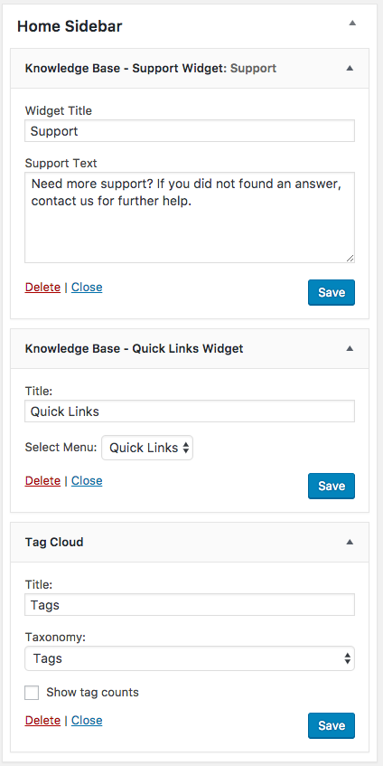
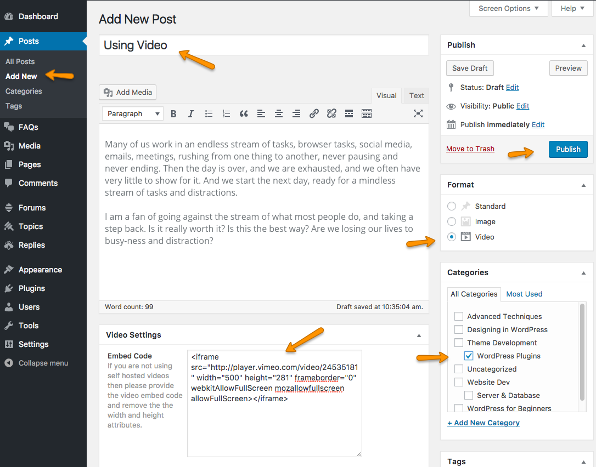
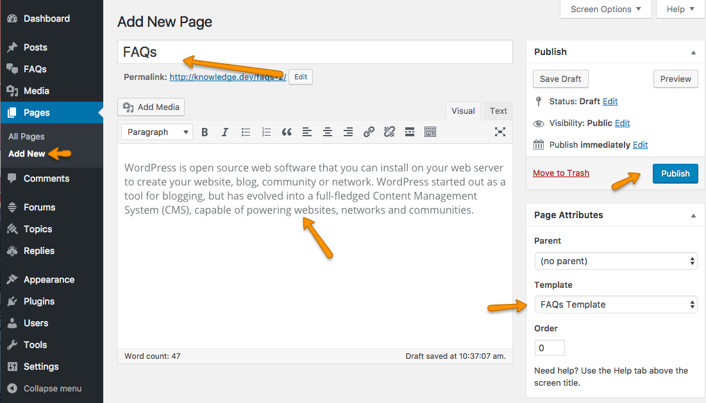
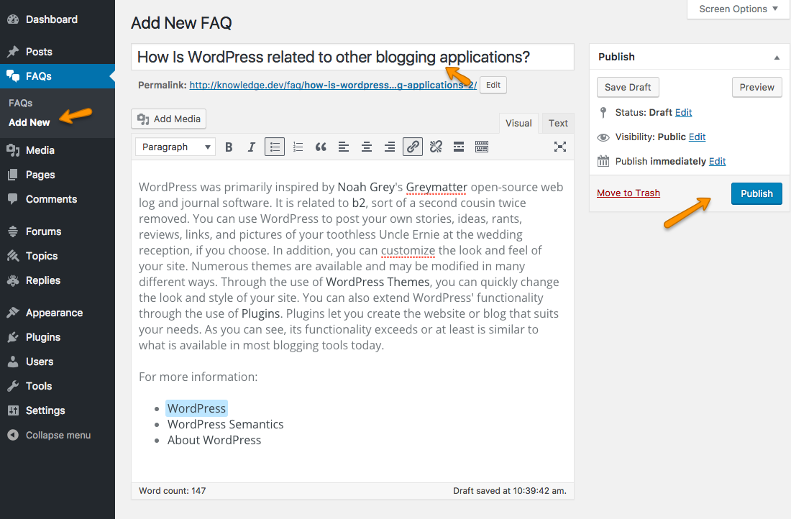
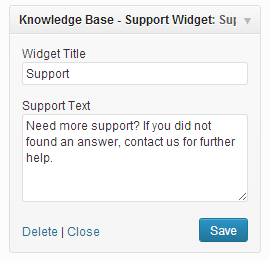
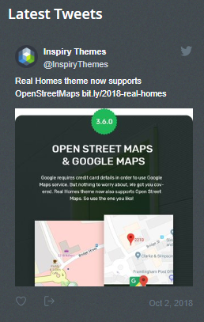

Documentation by Inspiry Themes
“Knowledge Base Theme”
Updated: 04 March 2015
Support: Support Site
Theme By: Inspiry Themes
Thank you for purchasing Knowledge Base Theme . If you have any questions that are beyond the scope of this help file, please feel free to create a support ticket at our support site. Thanks!
How to Get Themeforest Item Purchase Code to Create a Support Ticket
Please follow this guide to learn about how to get item purchase code from themeforest to signup on our support site.
Table of Contents
- Disclaimer
- Getting Started
- Other Theme Options
- How to publish an Article
- FAQs Settings
- Contact Page Settings
- Theme Widgets
- Theme Short Codes
- How to Add a Forum with bbPress
- Theme Customization
1) Disclaimer - top
We offer limited support for our themes. We only provide support for themes and their core features and functionality. We cannot guarantee our themes will function with all third party plugins and server environments. If you plan on adding numerous plugins to this theme, please note we cannot facilitate support of any conflicts they might cause with the default functionality. The Knowledge Base WordPress theme is presented as it is.
2) Getting Started - top
Welcome to Knowledge Base Theme Documentation. In start you must have a working version of WordPress already installed. For information in regard to installing the WordPress CMS, Please see the WordPress Codex Installing WordPress
2.1) Theme Installation - top
Please make sure to unzip the package that you downloaded from themeforest, Before uploading it to your WordPress installation as a theme. Because, it is not only a theme and contain many other related files & folders like Documentation, Import XML, Theme Files and Theme Zip
When you are ready to install this theme, you must first upload the theme files and then activate the theme itself. The theme files can be uploaded in two ways:
FTP Upload: Using your FTP client, upload the non-zipped theme folder into the /wp-content/themes/ folder on your server.
OR
WordPress Upload: Navigate to Appearance > Themes > Add New > Upload Theme. Go to "Browse/Choose File", and select the zipped theme file named inspiry-knowledgebase.zip. Hit “Install Now” and the theme will be uploaded and installed.
Once the theme is uploaded, you need to activate it. Go to Appearance > Themes and activate the uploaded theme.
Note: The Theme zip name is inspiry-knowledgebase.zip. which you will find in the downloaded package from themeforest.
Install Child Theme
It is better to use child theme and if you need to modify anything you modify in child theme only. This way you can easily update your parent theme when new update becomes available on themeforest. You can read more about child theme from here.
To install child theme for this theme, you need to upload the inspiry-knowledgebase-child.zip and activate it the same way you uploaded inspiry-knowledgebase.zip as guided above.
Translating Theme to Your language
If you want to translate the theme to your language then read the following article on our support site. How to translate your theme to your language
2.2) Recommended Quick Setup - top
Step 1:
Go to Appearance >> Import Demo Data and press the "Import Demo Data" button and wait as it will take few minutes to import demo data and related images from remote server.
Step 2:
After this, Go to Appearance >> Theme Options and simply save the theme options once.
Step 3:
Visit your site. Your basic theme installation is complete.
2.3) Manual Setup - top
Step 1: - top
Look for Import XML folder in unzipped package downloaded from themeforest.net and use the XML within it. Go to the WordPress Admin >> Tools >> Import >> WordPress ( at 1st time you need to install WordPress import plugin). After that, Import the XML file and be sure to include everything, including attachments. After that’s done, you will have a bunch of posts, pages and other related contents.
Step 2: - top
Go to Appearance >> Menus. You will find three menus already created. Arrange and Assign them as displayed in image below.

Step 3: - top
Go to Settings >> Reading and assign Home page as Front Page and Articles List page as posts page. As displayed in image below.
Step 4: - top
Go to Appearance >> Theme Options >> Header and upload your logo and favicon as displayed in image below.
Step 5: - top
Go to Appearance >> Theme Options >> Home and configure the settings as displayed in image below.

Step 6: - top
Go to Appearance >> Widgets and configure widgets in Home Sidebar as displayed in following screenshot.

Your Home Page’s basic settings are done now. you can further customize things according to your requirements.
3) Other Theme Options - top
This theme comes with extensive theme options and few sections of theme options are already displayed in Quick Setup and Few will be displayed with related documentation sections. Remaining sections are listed here for your understanding.
3.1) Search Area Options - top
Go to Appearance >> Theme Options >> Search Area and modify the Search area title and text below title as displayed in screenshot below.
3.2) Theme Styling ( Colors & Background )
Go to Appearance >> Theme Options >> Styling and modify the settings to your needs as displayed in image below.
3.3) Social Navigation - top
Go to Appearance >> Theme Options >> Social Navigation and and provide the links for social services that you want to use.
3.4) Footer - top
Go to Appearance >> Theme Options >> Footer and modify Copyright text to your needs.
4) How to publish an Article - top
4.1) Standard Article - top
Go to Posts >> Add New and specify title of your post, after that add post content. You can choose/add a relevant category in Categories widget on right sidebar and also add/choose related tags from Tags widget. When you are done, press publish button on right sidebar article will be published. A screenshot is provided below as reference for a standard article.
4.2) Article with Image Post Format - top
Add your article like a standard article as described in previous paragraph. After that choose Image format from Format widget in right sidebar and set an image as featured image from Featured Image widget in sidebar. As displayed in screenshot below. Publish/Update the article after you are done.
Featured Image should have a minimum width of 770px. Height is auto and will be adjusted proportional to image dimensions.
4.3) Article with Video Post Format - top
Add your article like a standard article as described in previous paragraph. After that choose Video format from Format widget in right sidebar and provide video embed code in Video Settings meta box. As displayed in screenshot below. Publish/Update the article after you are done.

5) FAQs Settings - top
5.1) Create FAQs Page - top
To create your FAQs page go to Pages >> Add New, provide your page name and select FAQs Template as page template from Page Attributes meta box on right side of page editor. As, displayed in following screenshot.

5.2) Create new Question and Answer for FAQs Page - top
To create new Question and related answer form FAQs page you need to go to FAQs >> Add New and provide your question as title and answer as content text as displayed in image below.

6) Contact Page Settings - top
Add Contact Page
To add contact page you need to go to Pages >> Add New and provide the page title for example “Contact” and later on choose the Contact Template as page template from Page Attributes meta box on right side of page editor.
Contact page text content will come from page that you created and Contact Form will be added below the contents as given in theme demo.
There is a section in Theme Options ( “Appearance >> Theme Options >> Contact” ) where you can change the target email address that will receive contact form messages.
7) Theme Widgets - top
Support Widget
This widget displays a title and message with support background image and colors

its front end side looks like this image below.
Quick Links Widget
This widget displays a list of links from a chosen custom menu
its front end side looks like this image below.
Latest Articles Widget
This widget displays a list of latest articles with likes count
its front end side looks like this image below.

Featured Articles Widget
This widget displays a list of featured articles ( based on tag selected from theme options's home page settings) with likes count.
its front end side looks like this image below.
Latest Tweets Widget - For Footer
This widget displays a list of latest tweets from twitter.
How to Get Your Twitter Consumer Keys and Access Tokens
- Sign In to the Twitter Developers section. If you do not already have an account, you can login with your normal Twitter credentials
- Got to My Applications page.
- Click Create a New Application Button and it will take you to Create an Application form page.
- Provide your website name, description and URL, Agree with contract and provide CAPTCHA and press Create your Twitter Application button.
- Details of your new twitter application will be shown along with your consumer key and consumer secret.
- But, you also need to create access tokens and for that you need to click on Create my access token button.
- The page will then refresh on the "Details" tab with your new access tokens. (if you are not able to view these first time, click on details tab and access tokens should appear after page refresh) You can recreate these at any time if you need to.
- Now use these consumer key, consumer secret, access token and access token secret in twitter widget back end. As, displayed in screenshot provided below.
its front end side looks like this image below.

Flickr Photos Widget - For Footer
This widget displays a list of Flickr Photos from specified Flickr ID as displayed in images below.
its front end side looks like this image below.
8) Theme Short Codes - top
The theme comes pre-packed with a number of short codes allowing you to add styled content to your site with little effort.
Columns
Columns short code is easy way to make columns in your page or post. All short codes related to columns and usage of these codes is mentioned below
[columns][/columns] You should wrap all columns in it.
[one_half][/one_half]
[one_third][/one_third]
[one_fourth][/one_fourth]
[one_sixth][/one_sixth]
[single_column][/single_column]
Usage:
[columns][one_third]
Your Heading
Your paragraphs and other contents
[/one_third][/columns]
jQuery Accordion
jQuery Accordion shortcode creates an accordion. Its usage example is given below
[accordion]
[accor_block title="First Accordion Item"]Some Contents[/accor_block]
[accor_block title="Second Accordion Item"]Some Contents[/accor_block]
[accor_block title="Third Accordion Item"]Some Contents[/accor_block]
[/accordion]
jQuery Tabs
jQuery Tabs shortcode makes beautiful tabs in very simple way.
[tabs titles="First Tab, Second Tab, Third Tab"]
[tab_pane] First Tab Contents [/tab_pane]
[tab_pane] Second Tab Contents [/tab_pane]
[tab_pane] Third Tab Contents [/tab_pane]
[/tabs]
jQuery Toggles
usage example is given below
[toggles]
[toggle_block title="First Toggle Item"]Some Contents[/toggle_block]
[toggle_block title="Second Toggle Item"]Some Contents[/toggle_block]
[toggle_block title="Third Toggle Item"]Some Contents[/toggle_block]
[/toggles]
Message Boxes
We have four different types of message boxes in this theme. Usage is mentioned below
[error]Your Error Message Here[/error]
[success]Your Success Message Here[/success]
[info]Your Information Message Here[/info]
[notice]Your Notice Message Here[/notice]
9) How to use bbPress - top
wpbeginner.com has a really easy to follow article to setup and use bbPress. You can read that article using this link.
10) Theme Customization - top
For customisation you can consider using services like https://codeable.io/ or https://studio.envato.com/explore/wordpress-customization or http://werkpress.com/
Once again, Thank you very much for purchasing this Theme.